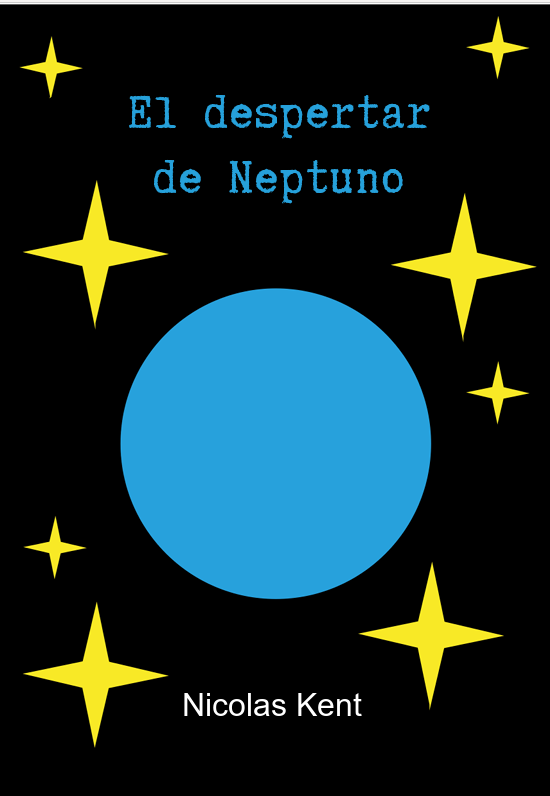

El Despertar de Neptuno
Novela de ciencia ficción · Autopublicado, 2026En el siglo XXII, el planeta Neptuno se transforma en una civilización próspera y armoniosa gracias a su poderoso líder, Michell-François. Sin embargo, una secta obsesiva conocida como La Orden Universal planea quedarse con el planeta para complacer sus propios egos, especialmente el de su líder, Madame X. Ahora Michell deberá aliarse con personajes inesperados para proteger su hogar y a todos los que lo habitan.
Próximamente para el gran público, ya que todavía no está a la venta más allá de la presentación.